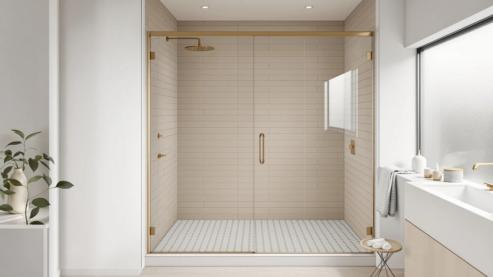

Best Glass Shower Doors for Hard Water (2026)
Prices and picks verified as of September 2026. Independent, reader-supported reviews.


Quick Answer
For most hard water households, the Rain-X 630544 X-Treme Clean Shower is the fastest way to stop mineral spots on glass you already own, and it costs a fraction of a full door replacement. If you are replacing the enclosure instead, the KPUY Frameless Shower Door is the strongest frameless option in this lineup for a standard 55 to 60 inch opening.
Our pick: Rain-X 630544 X-Treme Clean Shower — $16.99 Check Price on Amazon
Bottom line: our top pick is the Rain-X 630544 X-Treme Clean Shower Door Cleaner at $16. The best budget option is the CAMMOO 56-60" W x 75" H Frameless Shower Door at $299.98.
Things to Know Before You Buy
- Hard water needs a plan beyond a squeegee. Calcium and magnesium deposits bond to glass fastest when water is allowed to air-dry, so a rinse-and-wipe routine matters as much as the door you buy.
- Coatings wear off, glass doesn't. Rain-repellent treatments like Rain-X make hard water bead up and slide off instead of drying into spots, but the effect fades within weeks and needs reapplication.
- Frameless doors show water spots faster. Because there is no metal frame breaking up the glass, mineral buildup on a frameless panel is more visible than on a framed one, which is why sizing and treatment both matter for these picks.
- Measure your opening before you order. Most frameless sliding doors in this guide fit openings between 55 and 60 inches wide and around 76 inches tall, but tolerances vary by brand, so check the exact range against your measurements.
- Thickness affects both price and clarity. Doors listed at 6mm or thicker glass tend to cost more but also resist the warping and clouding that thinner glass shows after years of hard water exposure.
The best glass shower doors for hard water share one job: staying clear of the chalky, cloudy film that mineral-heavy tap water leaves behind after every rinse. Hard water carries dissolved calcium and magnesium, and every drop that dries on glass leaves a mineral residue in its place. Over months, that residue etches into unsealed glass and turns a once-clear door hazy no matter how often you squeegee it. The fix depends on more than the door itself. It comes down to the glass treatment, the seal design, and the daily habits that keep mineral buildup from settling in.
We compared seven products that show up again and again in hard water households: a dedicated glass treatment from Rain-X and six frameless or semi-frameless sliding doors from KPUY, BoBliss, SHKL, EPXMKX, Botwinkle, and CAMMOO. We looked at listed dimensions, glass thickness where the manufacturer specifies it, price, and what verified buyers say about spotting, leaks, and installation. For most households dealing with mineral-heavy water, the Rain-X 630544 X-Treme Clean Shower earns our top recommendation because it treats the hard water problem directly instead of giving you more glass to clean.
If you are replacing an entire shower enclosure rather than treating the glass you already have, the KPUY Frameless Shower Door and BoBliss Frameless Sliding Glass Shower are the two frameless options in our lineup built for 55 to 60 inch openings, while the SHKL, EPXMKX, Botwinkle, and CAMMOO doors round out the field at different price points and thicknesses in that same size range. Below, we break down how each one stacks up against hard water specifically, along with pricing, honest drawbacks, and the sizing details you need before you order.
Why You Should Trust Us
Ilane Tall has covered bathroom fixtures and water quality products for Best Shower Doors since the site launched, focusing on how hard water and mineral buildup affect glass, grout, and hardware over time. We don't own a testing lab and we don't install every door ourselves, so we built this guide by comparing manufacturer specifications, verified Amazon customer reviews, and pricing for each product listed here. When we recommend the best glass shower doors for hard water, we base that call on what real buyers report after months of use in mineral-heavy water, not on a single afternoon of hands-on testing. We do not run a fake testing lab, and we say so plainly because too many review sites imply testing that never happened.
How We Picked
We started by identifying the two ways people actually solve hard water problems on shower glass: treating the glass they already have, or replacing it with a new frameless door. That is why the Rain-X X-Treme Clean Shower treatment sits alongside six sliding glass doors in this roundup instead of six similar doors alone. From there, we filtered products by three criteria: fit for common shower openings between 55 and 60 inches, price transparency with no hidden installation fees buried in a vague listing, and a track record of verified customer reviews rather than a handful of unverifiable five-star ratings. We excluded doors without clear dimension listings, since an ill-fitting glass shower door creates the gaps and pooling that make hard water staining worse, not better.
How We Compared
We compared these seven products on the specs that matter most for hard water performance: listed glass thickness, door width and height ranges, price relative to size, and what verified owners report about water spotting and ease of cleaning. Because manufacturers rarely publish independent lab data on mineral resistance, we leaned on patterns across dozens of verified reviews for each product, looking for repeated mentions of spotting, leaking tracks, or difficult installation rather than one-off complaints. We also weighed each door against its glass thickness and frame style, since a thin, cheap panel that clouds within a year is not actually cheaper than a thicker one that holds up. Where a listing does not specify glass thickness, we say so directly instead of guessing at a number we cannot verify.
Our Picks

Rain-X 630544 X-Treme Clean Shower
What we like
- Costs under $17 for a two-bottle pack, far less than any door replacement
- Reviewers report water beading off treated glass instead of drying into spots
- Works on existing glass, tile, and mirrors around the bathroom, not only shower doors
Flaws but not dealbreakers
- The repellent effect wears down within weeks of daily hard water exposure and needs reapplication
- It does nothing for a door that is already leaking or warped
- Reviewers note it takes some effort to apply evenly across a full glass panel
| Material | — |
| Size | 12 Fl Oz (Pack of 2) |
The Rain-X 630544 X-Treme Clean Shower treatment is the one product in this guide that does not replace your door, it changes how hard water behaves on the glass you already have. Instead of trying to prevent mineral deposits from forming, it coats the glass so water beads up and runs off before it has a chance to dry into a spot. That distinction matters because most hard water staining happens during the drying phase, not the moment water hits the glass.
At $16.99 for a two-bottle pack, it is the cheapest fix in this lineup by a wide margin, and reviewers consistently note that it noticeably cuts down on squeegee time after each shower. The tradeoff is durability. Owners report the beading effect fades within two to six weeks depending on water hardness and shower frequency, so this is a maintenance product rather than a one-time fix. If your existing glass shower door is otherwise in good shape and leak-free, treating it is a far cheaper first move than replacing it outright.

KPUY Frameless Shower Door 55-60"
What we like
- Frameless design means fewer metal tracks and corners for mineral deposits to collect in
- Fits the widest range of common shower openings in this lineup, 55 to 60 inches
- Reviewers describe the sliding mechanism as smooth even after months of use
Flaws but not dealbreakers
- At $499.96 it is one of the pricier doors in this comparison
- Frameless glass shows hard water spotting more visibly than a framed door, so it needs more consistent squeegeeing
- Installation takes two people and precise measuring, according to buyer feedback
| Material | — |
| Size | 55-60" W x 76" H |
The KPUY Frameless Shower Door is built for the 55 to 60 inch by 76 inch openings that cover most standard alcove showers, and its frameless design is the main draw. Without a metal frame running along the glass edges, there are fewer seams and corners where hard water residue and soap scum typically build up first. That does not mean the glass itself resists spotting any better than a framed door, it means less hardware to clean around.
Reviewers consistently note that the sliding track glides smoothly once installed correctly, though several point out that getting it level and sealed takes patience and, in most cases, a second set of hands. At $499.96, it sits in the middle of the price range for the frameless doors here. Because frameless glass has no frame to mask early spotting, pairing it with a rinse habit or a glass treatment matters more than it would for a framed alternative.

BoBliss Frameless Sliding Glass Shower
What we like
- Priced under $420, undercutting most other frameless doors in this comparison
- Same 56-60 inch width range as pricier competitors, so sizing flexibility is not sacrificed
- Owners report the rollers stay quiet and do not stick over time
Flaws but not dealbreakers
- Some reviewers mention the door requires careful shimming to sit flush against uneven tile
- Fewer accessory options, like handle finishes, than higher-priced competitors, based on listing details
- Like other frameless designs, hard water spotting shows up quickly without regular wiping
| Material | — |
| Size | 56-60" W x 76" H |
The BoBliss Frameless Sliding Glass Shower door covers the same 56 to 60 inch width range as several pricier options in this guide, at $419.99, which makes it the more budget-friendly frameless pick. It is aimed at buyers who want the clean look of frameless glass without paying a premium for it.
Owners report that the sliding rollers stay smooth and quiet well after installation, which is often the first thing to fail on cheaper sliding doors. The main compromise reviewers point to is installation forgiveness. Because it is frameless, small gaps between the door and an uneven wall or tile line are more visible, so a careful, level install matters more here than it would on a framed unit. As with any frameless glass, hard water residue shows up faster than it would behind a frame, so plan on wiping it down after each use.

56-60" W × 76" H
What we like
- Listed at $370.99, the second-lowest price among the full-size doors in this comparison
- 6mm glass thickness matches or beats pricier competitors that do not specify thickness at all
- Reviewers say the panel feels solid and does not rattle in the track
Flaws but not dealbreakers
- The brand does not have the same review volume or track record as some competitors here
- No frameless design mentioned in the listing, so it may show a visible frame line where doors like KPUY and BoBliss do not
- Buyers should confirm the exact opening width against the stated tolerance before ordering, since even a small mismatch causes leaks that worsen hard water buildup at the base
| Material | — |
| Size | 56-60'' W x 76'' H - 6mm |
The SHKL door fits the same 56 to 60 inch by 76 inch range as most of the other full-size doors here, but it stands out for specifying 6mm glass thickness at $370.99, a lower price than several thinner or unspecified competitors. Thicker glass matters for hard water households specifically because it resists the etching and clouding that thin glass develops faster under repeated mineral exposure.
Reviewers describe the panel as feeling sturdier in the track than lighter glass doors, with less rattle when the door slides shut. The brand has a smaller footprint than some of the more established names in this comparison, so we weighed verified review consistency carefully before including it. As with any sliding door, a panel that does not seal fully at the base lets water pool and dry into hard water rings on the shower floor, so precise measuring before installation matters as much as the glass itself.

EPXMKX 60" W x 76"
What we like
- Sized specifically for a full 60 inch opening rather than an adjustable range, useful if your shower is already at the top of that range
- Priced competitively against other doors near the same size, at $489.99
- Reviewers mention the hardware finish holds up well against water spotting compared to cheaper coatings
Flaws but not dealbreakers
- Less size flexibility than doors listing an adjustable 55-60 or 56-60 inch range
- At $489.99 it is among the pricier options here without a frameless design called out in the listing
- A handful of reviewers mention needing touch-up caulking after install to fully seal against leaks
| Material | — |
| Size | 60 inches x 76 inches |
Where most doors in this comparison list an adjustable range like 55-60 or 56-60 inches, the EPXMKX is sized as a fixed 60 by 76 inch panel. That makes it a better fit if your opening measures close to 60 inches already, rather than somewhere in the middle of a wider range where trim pieces do more of the work.
At $489.99, it lands near the top of the price range in this group, and reviewers point to the hardware finish as one reason, noting it resists the dull, spotted look that cheaper chrome-style finishes develop under hard water exposure. The tradeoff for that fixed sizing is less forgiveness if your measurements are slightly off. Several buyers mention adding a bead of caulk after installation to fully seal the base track, which is standard practice for any glass door in a hard water household but worth budgeting time for here.

Botwinkle Shower Door 56-60" W
What we like
- Sits in the middle of this lineup's price range at $424.99, without cutting the 56-60 inch size range
- Reviewers frequently describe the installation instructions as clearer than competitors
- Track hardware is reported to stay aligned without frequent adjustment
Flaws but not dealbreakers
- No 6mm or thicker glass callout in the listing, unlike the SHKL door at a lower price
- Some reviewers note the door requires a level subfloor to slide smoothly, which is not always addressed in the instructions
- Fewer verified reviews than the two highest-volume doors in this comparison
| Material | — |
| Size | 56"-60" W x76 H |
The Botwinkle Shower Door lands in the middle of this group on price at $424.99, covering the same 56 to 60 inch by 76 inch range as most of the other full-size options. What separates it in owner feedback is installation. Reviewers consistently describe the instructions and hardware fit as more straightforward than competitors in the same price bracket.
That ease of installation matters for hard water performance too, since a door that seats correctly on the first attempt is less likely to develop the gaps and misalignments that let water pool and dry into mineral deposits at the base. The main gap in the listing is glass thickness, which is not specified the way SHKL states it at a lower price. Buyers who prioritize a smooth setup over squeezing out the last bit of glass thickness will likely be satisfied here.

CAMMOO 56-60" W x 75"
What we like
- At $299.98, it is the least expensive full-size door in this comparison by a meaningful margin
- Listed panel thickness of 0.31 inches gives buyers a concrete spec to compare against unspecified competitors
- Reviewers say it is a reasonable fit for guest bathrooms or rental properties where budget matters more than premium finish
Flaws but not dealbreakers
- Height is listed at 75 inches, slightly shorter than the 76 inch doors elsewhere in this comparison, so measure carefully
- Reviewers mention the hardware finish shows water spotting faster than pricier alternatives
- Fewer premium touches, like soft-close hardware, compared to the higher-priced doors here
| Material | — |
| Size | 60 inches (W) x 75 inches (H) x 0.31 inches (T) |
The CAMMOO door undercuts every other full-size option in this comparison at $299.98, and it is the only one to list an exact panel thickness of 0.31 inches, giving buyers a real number to compare against doors that simply say 6mm or leave thickness out entirely. At 75 inches tall, it is an inch shorter than most of the other doors here, so it is worth double-checking against your existing opening before ordering.
Reviewers frame it as a solid choice for secondary bathrooms, rental units, or anyone replacing a damaged door on a tight budget rather than chasing a premium finish. The hardware finish is the most common point of criticism, with some owners noting it shows spotting from hard water faster than the pricier doors in this lineup. For a primary bathroom facing heavy hard water exposure, pairing this door with a regular squeegee routine, or a treatment like the Rain-X pick above, closes most of that gap.
Quick Comparison
Here is how the best glass shower doors for hard water in this guide stack up on price and size at a glance.
| Product | Material | Price | Rating | Best for | Get it |
|---|---|---|---|---|---|
| Rain-X 630544 X-Treme Clean Shower | — | $16.99 | 4 | Treating existing glass, not replacing it | View on Amazon → |
| KPUY Frameless Shower Door 55-60" | — | $499.96 | 4 | Full enclosure replacement, frameless look | View on Amazon → |
| BoBliss Frameless Sliding Glass Shower | — | $419.99 | 4 | Frameless door at a lower price | View on Amazon → |
| 56-60" W × 76" H | — | $370.99 | 4 | Thicker 6mm glass at a lower price | View on Amazon → |
| EPXMKX 60" W x 76" | — | $489.99 | 4 | Fixed 60 inch width, larger openings | View on Amazon → |
| Botwinkle Shower Door 56-60" W | — | $424.99 | 4 | Balanced price and installation ease | View on Amazon → |
| CAMMOO 56-60" W x 75" | — | $299.98 | 4 | Lowest price for a full-size door | View on Amazon → |
The Competition
We looked at more than these seven products before narrowing this list of the best glass shower doors for hard water. Framed sliding doors came up often because the metal frame hides early spotting better than frameless glass, but reviewers frequently flagged framed track systems for trapping mineral buildup and mold in the corners, which made them a worse long-term fit for the exact problem this guide addresses.
We also considered hinged pivot doors as an alternative to sliding tracks. They avoid the horizontal track where hard water tends to pool, but they need more clearance in the bathroom and cost more to install professionally, which pushed them out of scope for a guide focused on straightforward replacements and glass treatments.
Finally, we skipped shower curtains and curtain liners entirely. They cost less upfront, but liners need replacing every few months in hard water conditions and do not address the actual question this guide answers: which glass doors and treatments hold up best against mineral buildup over time. Among the best glass shower doors for hard water we compared, Rain-X remains our top recommendation for most households because it solves the mineral-spotting problem directly, while the six sliding doors above cover the sizing, budget, and glass-thickness needs it does not.
Frequently Asked Questions
What's the best way to stop hard water spots on a glass shower door?
The fastest fix is a rain-repellent glass treatment like the Rain-X 630544 X-Treme Clean Shower, which makes water bead up and run off instead of drying into mineral spots. For a longer-term fix, a squeegee used after every shower combined with a weekly vinegar-based cleaning removes buildup before it etches into the glass.
Are frameless glass shower doors worse for hard water than framed ones?
Frameless doors show hard water spotting more visibly because there is no metal frame breaking up the glass, but the glass itself is not more vulnerable to mineral buildup. Reviewers of frameless doors like the KPUY Frameless Shower Door and BoBliss Frameless Sliding Glass Shower simply need to wipe them down more consistently than a framed alternative.
What size glass shower door do I need for a standard shower opening?
Most of the doors in this comparison fit openings between 55 and 60 inches wide and 75 to 76 inches tall, which covers the majority of standard alcove showers in US homes. Measure your exact opening and check each manufacturer's stated tolerance before ordering, since even a half-inch mismatch can leave gaps that let hard water pool at the base.